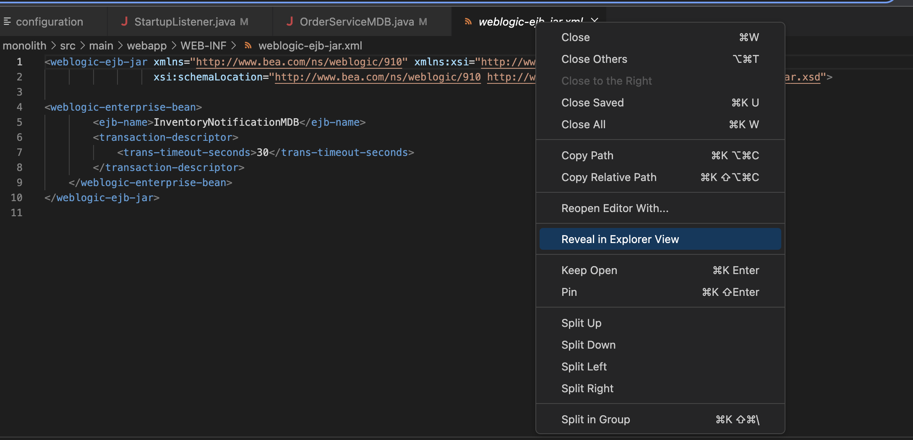

3. Migrate to JBoss EAP - 30 minutes
In this step you will migrate some Weblogic-specific code in the app to use standard (Jakarta EE) interfaces.
3.1. Jump to Code
Let’s jump to code containing identified migration issues. Expand the monolith source project in the MTA explorer and navigate to monolith > src > main > java > com > redhat > coolstore > utils > StartupListener.java. Be sure to click the arrow next to the actual class name StartupListener.java to expand and show the Hints:
| You can use CTRL+p (or CMD+p on Mac OSX) to quickly open a file. Simply start typing the name of the file in the text box that appears and select your file from the list that is produced. |
In the Explorer, MTA issues use an icon to indicate their severity level and status. The following table describes the meaning of the various icons:

3.2. View Details about the Migration Issues
Let’s take a look at the details about the migration issue. Right-click on WebLogic ApplicationLifecycleListenerEvent[rule-id:xxx] in Hints of StartupListener.java file. Click on View Details:
The WebLogic ApplicationLifecycleListener abstract class is used to perform functions or schedule jobs in Oracle WebLogic, like server start and stop. In this case we have code in the postStart and preStop methods which are executed after Weblogic starts up and before it shuts down, respectively.
In Jakarta EE, there is no equivalent to intercept these events, but you can get equivalent functionality using a Singleton EJB with standard annotations, as suggested in the issue in the MTA report.
We will use the @Startup annotation to tell the container to initialize the singleton session bean at application start. We
will similarly use the @PostConstruct and @PreDestroy annotations to specify the methods to invoke at the start and end of
the application lifecyle achieving the same result but without using proprietary interfaces.
Using this method makes the code much more portable.
3.3. Fix the ApplicationLifecycleListener issues
In this section we’re going to deal with the following two issues from the report:
To begin we are fixing the issues under the Monolith application. Click on WebLogic ApplicationLifecycleListenerEvent[rule-id:xxx] in Hints of StartupListener.java file:
You can also navigate to the cloud-native-workshop-v2m1-labs folder in the project tree, then open the file monolith/src/main/java/com/redhat/coolstore/utils/StartupListener.java by clicking on it.
Replace the file content with:
package com.redhat.coolstore.utils;
import javax.annotation.PostConstruct;
import javax.annotation.PreDestroy;
import javax.ejb.Startup;
import javax.inject.Singleton;
import javax.inject.Inject;
import java.util.logging.Logger;
@Singleton
@Startup
public class StartupListener {
@Inject
Logger log;
@PostConstruct
public void postStart() {
log.info("AppListener(postStart)");
}
@PreDestroy
public void preStop() {
log.info("AppListener(preStop)");
}
}|
Where is the Save button? VS Code will autosave your changes, that is why you can’t find a SAVE button - no more losing code because you forgot to save. You can undo with CTRL-Z (or CMD-Z on a Mac) or by using the In case you see the red lines in the source code, you can’t ignore it because they are the migration issues rather than compliation errors. |
3.4. Test the build
Open a Terminal window.
In the terminal, issue the following command to test the build:
mvn -f $PROJECT_SOURCE/monolith clean packageIf it builds successfully (you will see BUILD SUCCESS), let’s move on to the next issue! If it does not compile, verify you made all the changes correctly and try the build again.
[INFO] --- maven-war-plugin:3.2.0:war (default-war) @ monolith ---
[INFO] Packaging webapp
[INFO] Assembling webapp [monolith] in [/projects/cloud-native-workshop-v2m1-labs/monolith/target/ROOT]
[INFO] Processing war project
[INFO] Copying webapp resources [/projects/cloud-native-workshop-v2m1-labs/monolith/src/main/webapp]
[INFO] Webapp assembled in [841 msecs]
[INFO] Building war: /projects/cloud-native-workshop-v2m1-labs/monolith/target/ROOT.war
[INFO] ------------------------------------------------------------------------
[INFO] BUILD SUCCESS
[INFO] ------------------------------------------------------------------------
[INFO] Total time: 7.333 s
[INFO] Finished at: 2023-07-06T18:28:28Z
[INFO] ------------------------------------------------------------------------3.5. View the diffs
You can review the changes you’ve made. On the left, click on the Version Control icon, which shows a list of the changed files. Double-click on StartupListener.java to view the differences you’ve made:
VS Code keeps track (using Git) of the changes you make, and you can use version control to check in, update, and compare files as you change them.
For now, go back to the Explorer tree and lets fix the remaining issues.
3.6. Fix the logger issues
In this section we’ll be looking to remediate this part of the migration report:

Some of our application makes use of Weblogic-specific logging methods like the NonCatalogLogger, which offer features related to logging of
internationalized content, and client-server logging.
The WebLogic NonCatalogLogger is not supported on JBoss EAP (or any other Java EE platform), and should be migrated to a
supported logging framework, such as the JDK Logger or JBoss Logging.
We will use the standard Java Logging framework, a much more portable framework. The framework also supports internationalization if needed.
In the same monolith directory, open the src/main/java/com/redhat/coolstore/service/OrderServiceMDB.java file and replace its contents with:
package com.redhat.coolstore.service;
import javax.ejb.ActivationConfigProperty;
import javax.ejb.MessageDriven;
import javax.inject.Inject;
import javax.jms.JMSException;
import javax.jms.Message;
import javax.jms.MessageListener;
import javax.jms.TextMessage;
import com.redhat.coolstore.model.Order;
import com.redhat.coolstore.utils.Transformers;
import java.util.logging.Logger;
@MessageDriven(name = "OrderServiceMDB", activationConfig = {
@ActivationConfigProperty(propertyName = "destinationLookup", propertyValue = "topic/orders"),
@ActivationConfigProperty(propertyName = "destinationType", propertyValue = "javax.jms.Topic"),
@ActivationConfigProperty(propertyName = "acknowledgeMode", propertyValue = "Auto-acknowledge")})
public class OrderServiceMDB implements MessageListener {
@Inject
OrderService orderService;
@Inject
CatalogService catalogService;
private Logger log = Logger.getLogger(OrderServiceMDB.class.getName());
@Override
public void onMessage(Message rcvMessage) {
TextMessage msg = null;
try {
if (rcvMessage instanceof TextMessage) {
msg = (TextMessage) rcvMessage;
String orderStr = msg.getBody(String.class);
log.info("Received order: " + orderStr);
Order order = Transformers.jsonToOrder(orderStr);
log.info("Order object is " + order);
orderService.save(order);
order.getItemList().forEach(orderItem -> {
catalogService.updateInventoryItems(orderItem.getProductId(), orderItem.getQuantity());
});
}
} catch (JMSException e) {
throw new RuntimeException(e);
}
}
}That one was pretty easy.
3.7. Test the build
Build and package the app again just as before:
mvn -f $PROJECT_SOURCE/monolith clean packageIf builds successfully (you will see BUILD SUCCESS), then let’s move on to the next issue! If it does not compile, verify you made all the changes correctly and try the build again.
3.8. Remove the Weblogic EJB Descriptors
In this and the following few sections we’ll be addressing this part of the report
To highlight in a little more detail:
-
Call of JNDI lookup- Our apps use a weblogic-specific JNDI lookup scheme. -
Proprietary InitialContext initialization- Weblogic has a very different lookup mechanism for InitialContext objects -
WebLogic InitialContextFactory- This is related to the above, essentially a Weblogic proprietary mechanism -
WebLogic T3 JNDI binding- The way EJBs communicate in Weblogic is over T2, a proprietary implementation of Weblogic.
All of the above interfaces have equivalents in JBoss, however they are greatly simplified and overkill for our application which uses JBoss EAP’s internal message queue implementation provided by Apache ActiveMQ Artemis.
|
A word about JMS
In this final step we will again migrate some Weblogic-specific code in the app to use standard Java EE interfaces, and one JBoss-specific interface. Our application uses JMS to communicate. Each time an order is placed in the application, a JMS message is sent to a JMS Topic, which is then consumed by listeners (subscribers) to that topic to process the order using Message-driven beans, a form of Enterprise JavaBeans (EJBs) that allow Java EE applications to process messages asynchronously. In this case, Unfortunately this MDB was written a while ago and makes use of weblogic-proprietary interfaces to configure and operate the MDB. MTA has flagged this and reported it using a number of issues. JBoss EAP provides an even more efficient and declarative way to configure and manage the lifecycle of MDBs. In this case, we can
use annotations to provide the necessary initialization and configuration logic and settings. We will use the Much of Weblogic’s interfaces for EJB components like MDBs reside in Weblogic descriptor XML files. Use CTRL+p (or CMD+p on a Mac) to Quickly Open
|
The first step is to remove the unneeded weblogic-ejb-jar.xml file from the Project Explorer (not the Migration Assistant). This file is proprietary to Weblogic and not recognized or processed by JBoss EAP. Delete the file by right-clicking on the src/main/webapp/WEB-INF/weblogic-ejb-jar.xml file from the Project Explorer and choosing Delete, and click OK.
|
If you have the tab for the  |
While we’re at it, let’s remove the stub weblogic implementation classes added as part of the scenario.
Whilst still in the Project Explorer, right-click on the src/main/java/weblogic folder and select Delete to delete the folder:
3.9. Fix the code
Use CTRL+p (or CMD+p on a Mac) to Quickly Open the monolith/src/main/java/com/redhat/coolstore/service/InventoryNotificationMDB.java file and replace its contents with:
package com.redhat.coolstore.service;
import com.redhat.coolstore.model.Order;
import com.redhat.coolstore.utils.Transformers;
import javax.ejb.ActivationConfigProperty;
import javax.ejb.MessageDriven;
import javax.inject.Inject;
import javax.jms.JMSException;
import javax.jms.Message;
import javax.jms.MessageListener;
import javax.jms.TextMessage;
import java.util.logging.Logger;
@MessageDriven(name = "InventoryNotificationMDB", activationConfig = {
@ActivationConfigProperty(propertyName = "destinationLookup", propertyValue = "topic/orders"),
@ActivationConfigProperty(propertyName = "destinationType", propertyValue = "javax.jms.Topic"),
@ActivationConfigProperty(propertyName = "transactionTimeout", propertyValue = "30"), (1)
@ActivationConfigProperty(propertyName = "acknowledgeMode", propertyValue = "Auto-acknowledge")})
public class InventoryNotificationMDB implements MessageListener {
private static final int LOW_THRESHOLD = 50;
@Inject
private CatalogService catalogService;
@Inject
private Logger log;
public void onMessage(Message rcvMessage) {
TextMessage msg;
{
try {
if (rcvMessage instanceof TextMessage) {
msg = (TextMessage) rcvMessage;
String orderStr = msg.getBody(String.class);
Order order = Transformers.jsonToOrder(orderStr);
order.getItemList().forEach(orderItem -> {
int old_quantity = catalogService.getCatalogItemById(orderItem.getProductId()).getInventory().getQuantity();
int new_quantity = old_quantity - orderItem.getQuantity();
if (new_quantity < LOW_THRESHOLD) {
log.warning("Inventory for item " + orderItem.getProductId() + " is below threshold (" + LOW_THRESHOLD + "), contact supplier!");
}
});
}
} catch (JMSException jmse) {
System.err.println("An exception occurred: " + jmse.getMessage());
}
}
}
}| 1 | Remember the <trans-timeout-seconds> setting from the weblogic-ejb-jar.xml file? This is now set as an
@ActivationConfigProperty in the new code. There are pros and cons to using annotations vs. XML descriptors and care should be taken to consider the needs of the application. |
Your MDB should now be properly migrated to JBoss EAP.
Lastly, remove Maven dependency on org.jboss.spec.javax.rmi:jboss-rmi-api_1.0_spec. In JBoss EAP 7.3(or later), artifact with groupId org.jboss.spec.javax.rmi and artifactId jboss-rmi-api_1.0_spec are unsupported dependencies. Remove the following dependency in monolith/pom.xml:
3.10. Test the build
Build once again:
mvn -f $PROJECT_SOURCE/monolith clean packageIf builds successfully (you will see BUILD SUCCESS). If it does not compile, verify you
made all the changes correctly and try the build again.
3.11. Re-run the MTA report
In this step we will re-run the MTA report to verify our migration was successful.
Click on Run icon to analyze the WebLogic application:
Migration Toolkit for Applications (MTA) CLI will be executed automatically in a new terminal then it will take a few mins to complete the analysis. Click on Open Report:
|
If it is taking too long, feel free to skip the next section and proceed to step 13 and return back to the analysis later to confirm that you eliminated all the issues. |
3.12. View the results
Click on the latest result to go to the report web page and verify that it now reports 0 Story Points:
You have successfully migrated this app to JBoss EAP, congratulations!
|
You should be aware that this type of migration is more involved than the previous steps, and in real world applications it will rarely be as simple as changing one line at a time for a migration. Consult the MTA documentation for more detail on Red Hat’s Application Migration strategies or contact your local Red Hat representative to learn more about how Red Hat can help you on your migration path. |
3.13. Test the application on JBoss EAP locally
In this development environment (GitPod), a JBoss EAP server is already running with a PostgreSQL database. Click on Start Wildfly server terminal in the VS Code, take a look at if the EAP server is running properly:
<p align="center"> <img src="../img/eap-running.png" width=700 align=center> </p>

Copy the packaged application (.war file) to the running EAP server. Run the following command in the Pre-warm Maven terminal in GitPod:
cp $GITPOD_REPO_ROOT/target/ROOT.war /workspace/deployments/Go back to the Start Wildfly server terminal in GitPod where EAP was started for you, and you’ll see ROOT.war is deployed:
<p align="center"> <img src="../img/eap-deployed.png" width=700 align=center> </p>

Hint: If you accidentally closed the terminal that was running Wildfly, you can restart Wildfly with
$JBOSS_HOME/bin/standalone.sh -b 0.0.0.0
You can also find out that the inventory data is created in PostgreSQL. Run the following psql command in the GitPod Terminal:
PGPASSWORD=coolstore123 psql -h localhost -U coolstore monolith -c 'select itemid, quantity from INVENTORY;'The output should look like:
itemid | quantity
--------+----------
329299 | 736
329199 | 512
165613 | 256
165614 | 54
165954 | 87
444434 | 443
444435 | 600
444436 | 230
444437 | 300
(9 rows)Congratulations!
Now you are using the same application that we built locally on OpenShift. That wasn’t too hard right?
Summary
Now that you have migrated an existing Java EE app to the cloud with JBoss and OpenShift, you are ready to start modernizing the application by breaking the monolith into smaller microservices in incremental steps, and employing modern techniques to ensure the application runs well in a distributed and containerized environment.